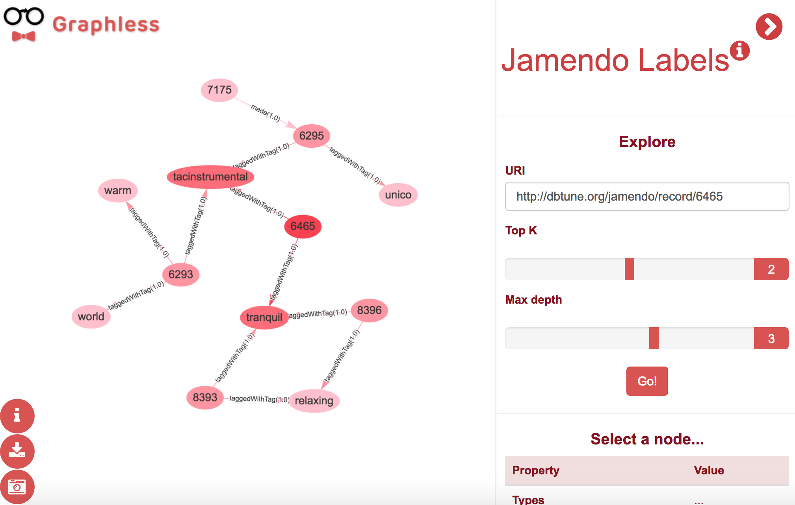

Graphless: Using Statistical Analysis and Heuristics for Visualizing Large Datasets
http://w3id.org/people/idafensp/slides/graphless
isantana@fi.upm.es 0000-0001-8296-8629 @idafensp
Ontology Engineering Group - Universidad Politécnica de Madrid
This is Graphless...
The problem
- Large datasets are hard to visualize
- Too many nodes and edges
- Not always the most relevant parts
The goal

The goal
Assumptions
- Conectivity degree
- Ingoing and outgoing properties
- The more connected a node is, the more important
- Property usage
- How many times a property is used for a given type
- Frequently used properties are more relevant
| Property | Prop.Type | Count | Normalized weight |
|---|---|---|---|
foaf:made |
Outgoing |
5786 |
1.0 |
foaf:based_near |
Outgoing |
3244 |
0.5606 |
foaf:name |
Outgoing |
3505 |
0.6057 |
... |
... |
... |
| Resource | Type | Ingoing Deg. | Outgoing Deg. | Norm. In. Deg. | Norm. Out. Deg. |
|---|---|---|---|---|---|
http://dbtune.org/jamendo/record/3280 |
mo:Record |
1 |
109 |
0.00009 |
1.0 |
http://dbtune.org/jamendo/artist/1442 |
mo:MusicArtist |
25 |
54 |
0.0022 |
0.2660 |
http://dbtune.org/jamendo/lyrics/23855 |
mo:Lyrics |
1 |
1 |
0.00009 |
0.0091 |
Heuristics
- Algorithms to select nodes and edges scores based on scores
- Traverse de graph
- Starting on a root node
- Limit condition
- Configurable parameters
- Two implementations
- Top-K
- Threshold
Top-K
- Select K highest edges in each interation
- Stops after max-depth interations

Threshold
- Consider only edges with score higher than a given threshold
- Increase the threshold with a decay value until no new nodes are retrieved
Implementation
- Data management
- Neo4j database
- Support node and edge annotation (relationships)
- Simple and efficient queries → Cypher
Cypher queries
#TOP-K
MATCH (n:JARLABS)-[r:JARLABS]->(x:JARLABS)
WHERE n.nodeid = '...' RETURN ...
ORDER BY r.weight DESC LIMIT 2
#Threshold
MATCH (n:JARLABS)-[r:JARLABS]->(x:JARLABS)
WHERE n.nodeid = '...' AND r.weight > 0.8 RETURN ...
Implementation
- User interface
- Web interface
- Menu with parameters and info
- vis.js for graph visulization
Results
- Jamendo
- Music Dataset
- Records, musical artists, torrents, lyrics, signals, tags, documents and tracks.
- 412K nodes, 251K literals, 1M relations.
- Public SPARQL endpoint
- Neo4j dataset available
Demo (change iframe URL)
This takes a minute to load. If it doesn't work click hereDiscussion
- Statistical analysis & Graph traverse heuristics
- Jamendo, small dataset
- Future work
- Go big! → DBpedia
- RDF snippets
- More heuristics
- Community
- Include node degrees
Questions?
Graphless: Using Statistical Analysis and Heuristics for Visualizing Large Datasets
http://w3id.org/people/idafensp/slides/graphless
isantana@fi.upm.es 0000-0001-8296-8629 @idafensp
Ontology Engineering Group - Universidad Politécnica de Madrid